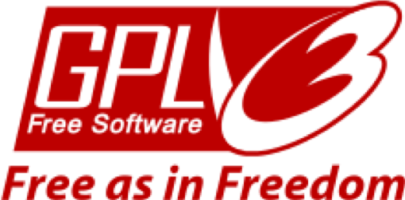

다. 자유 소프트웨어 운동의 시작
기업들이 점차 소스 코드를 공유하지 않기 시작했을 때 여전히 소스 코드를 프로그래머나 사용자와 공유하고 싶어하는 사람들이 있었다.
이러한 현상에 대해 리처드 스톨먼은 다른 사람의 소스 코드를 통해 수정하고 연구할 수 없게 되는 것에 우려를 표했다. 그는 이러한 관행이 윤리적으로 잘못되었다고 생각했다. 그래서 그는 GNU 프로젝트를 통해 사람들이 자유 소프트웨어만을 사용하여 컴퓨터를 사용할 수 있게 했다.
그는 이런 GNU 프로젝트의 목적과 자유 소프트웨어의 중요성을 이야기하고자 1985년에 GNU 선언문을 발표했다. 또한 그는 1985년 비영리기구인 FSF(Free Software Foundation)을 설립하여 공식적으로 프로젝트를 조직하였다. 저작권의 대상이 되는 저작물의 '무료' 상태를 유지하는 법적 매커니즘을 확립하고 그것을 GNU General Public 라이선스에 구현했다.
Linux는 리눅스 커널에 의해 시작되었고, 이것은 리누스 토발즈가 자유롭게 수정할 수 있도록 한 소스 코드로써 GNU 프로젝트에 부족한 커널을 채워 주었다. 이로써 GNU 프로젝트는 리눅스 커널을 통해 최초로 완전한 자유 소프트웨어 운영체제를 만들어내게 되었다.